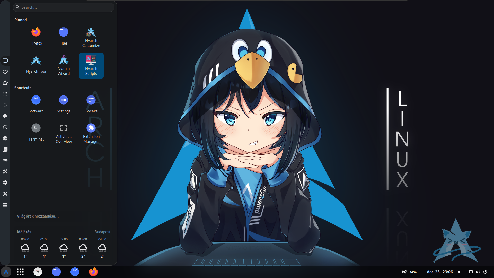

Grafikus felhasználói felület (GUI)
A Linux számos különböző GUI-val rendelkezik, amelyek közül a legnépszerűbbek a Gnome, a KDE és a Xfce. A GUI-k lehetővé teszik a felhasználók számára, hogy egyszerűen és intuitív módon használják a számítógépüket.

Alkalmazások
A Linux számos különböző alkalmazást támogat, beleértve az irodai alkalmazásokat, a játékokat, a szórakoztató alkalmazásokat és a fejlesztői eszközöket. A Linux felhasználók hozzáférhetnek a Windowson és a macOS-en is elérhető alkalmazásokhoz, például az Office-hoz, a Chrome-hoz és a Firefoxhoz.
Biztonság
A Linuxot számos biztonsági funkció védi, beleértve a tűzfalat, a víruskeresőt és a biztonságos csomagkezelőt. A Linux felhasználók rendszeresen frissíthetnek biztonsági frissítéseket, hogy számítógépük biztonságban legyen.
Teljesítmény
A Linux operációs rendszerek általában kevésbé erőforrás-igényesek, mint a Windows operációs rendszerek. Ez azt jelenti, hogy a Linuxot futtató számítógépek kevesebb memóriára és processzorteljesítményre van szükségük, mint a Windowsot futtató számítógépek.
Hardver támogatás
A Linux számos különböző hardvert támogat. A Linux felhasználók könnyen találhatnak olyan számítógépet, amely megfelel az igényeiknek és kompatibilis a Linux-szal.
Kompatibilitás
A Linux számos különböző alkalmazást és hardvert támogat. A Linux felhasználók hozzáférhetnek a Windowson és a macOS-en is elérhető alkalmazásokhoz és hardverekhez.
Támogatás
A Linux közösség nagy és aktív. A Linux felhasználók számos különböző forrásból kaphatnak segítséget, beleértve az online fórumokat, a wikiket és a szakértőket.